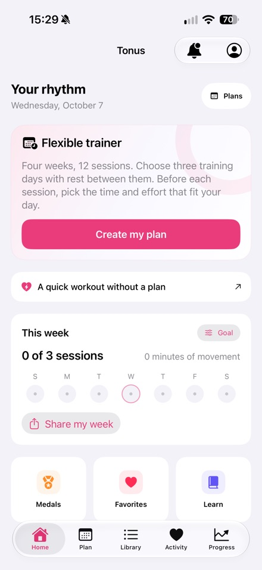

Written by Nikita Revin, developer of Tonus. Published 16 October 2026. This is a developer guide for the released version 1.4.
Choose a quick session or a flexible plan, then check duration, effort and equipment before starting.
Download Tonus
Choose a session or a plan
The Tonus home screen has an entry for a quick workout without a plan and a separate flexible trainer. The quick option lets you choose a session without setting up a calendar. The flexible plan contains 12 sessions on selected training days. Choose the format first, according to whether you want a session now or a sequence to follow.
Set duration and effort separately
Home sessions can last 5, 10 or 20 minutes. Choose the time you have set aside today, then check the light or regular effort setting. Five minutes describes duration, so it does not automatically mean that every exercise will feel easy. Read the exercise instructions and check the session settings before starting.
Check the space and equipment
Equipment-free, standing and no-jump options help you choose a workout format. Read the requirements for individual exercises as well. Videos are available for 60 exercises. If you need to watch them, check your connection before the session: online playback requires internet, and external video services may display ads.
When the workout belongs to a plan
The flexible plan follows three selected training days with rest between them. If a session is missed, it moves to the next selected day. Completed workouts remain saved. You can return to the sequence without deleting the progress already recorded; the next selected date receives the missed session.
Follow the session and record the result
During a workout, Tonus shows written instructions and timers and lets you replace exercises. After finishing, you can rate the difficulty and review the recorded progress. Plans and written instructions work offline. Apple Health is optional. No account, subscription or in-app purchase is required. This guide describes version 1.4 for iPhone with iOS 17 or later.
Tonus does not provide medical care. Stop if you feel pain or unwell. If you have health restrictions, discuss training with a qualified professional.
Download Tonus